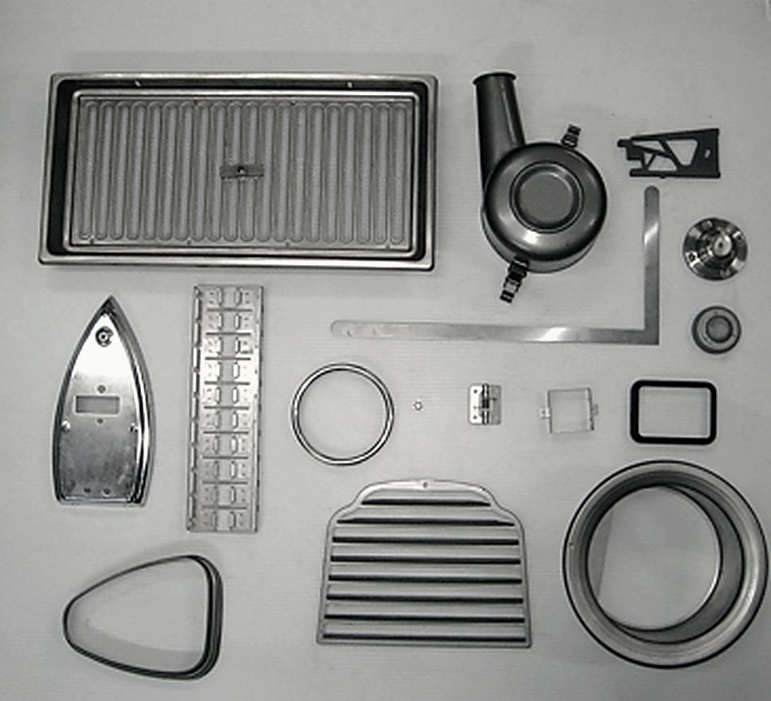

01
薄物ステンレスの絞り加工
ステンレスは、絞れば絞るほど硬くなります。加工硬化といって、一度伸ばした場所がそこで粘りを失う。薄い板ならなおさらで、力をかけすぎれば割れ、押さえが弱ければしわが立ちます。逃げ場が狭い。
この狭いところを通すのに要るのは、金型の当たりと、しわ押さえの加減と、何工程に割るかの判断です。カワイ製作所は、その判断を積んできました。

Strength
薄物ステンレスの絞り。多工程を自社内で通すこと。そして、他社と納期がぶつかっても受けられること。この3つで五十四年やってきました。
01 3つの強み

01
ステンレスは、絞れば絞るほど硬くなります。加工硬化といって、一度伸ばした場所がそこで粘りを失う。薄い板ならなおさらで、力をかけすぎれば割れ、押さえが弱ければしわが立ちます。逃げ場が狭い。
この狭いところを通すのに要るのは、金型の当たりと、しわ押さえの加減と、何工程に割るかの判断です。カワイ製作所は、その判断を積んできました。

02
絞り物は、たいてい1台では終わりません。抜いて、絞って、再度絞って、穴を開けて、ねじを立てて、面を取る。工程が増えるほど、外注に出すたびに荷物が止まり、日数が積み上がります。
プレス機23台に加えてタッピングマシーン、旋盤、研磨機、ボール盤、面取り機を同じ建屋に持っています。工程を割っても、荷物は工場から出ません。

03
「他社の納期とぶつかっている」「複数の型を同時に走らせたい」。この2つは、台数が無いと断ることになります。
80トンを8台、150トンを3台、110トンを3台。同じ帯に複数台あるので、1台が長い段取りに入っていても隣が空いています。台数は、そのまま受けられる幅です。
02 強みを支える数字
25トンから200トンまで、工程に合う圧を選べるよう9段階に刻んであります。
80トン帯の台数。同時進行はこの層が受けます。
タップ・旋盤・研磨・ボール盤など、二次加工の設備。
ステンレス・アルミ・真鍮・黄銅・りん青銅・チタン。

CONTACT ご相談
できる・できないの見当は、その場で付きます。板厚、材質、数量、いつ要るか。この4つが分かれば、あとはこちらで組み立てます。
これはデモサイトです。掲載内容と写真は公開情報をもとにした制作イメージで、実際の営業内容とは異なる場合があります。
制作：NextRay